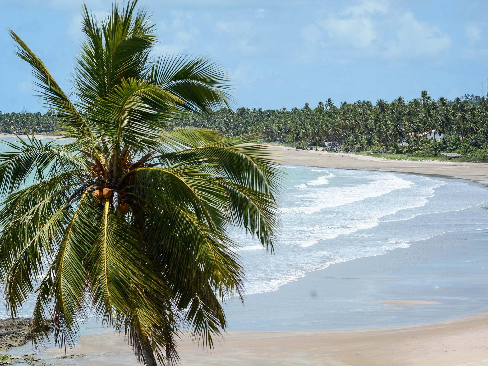

Maceió y São Miguel dos Milagres 🇧🇷

En el nordeste de Brasil viví una de las experiencias más tropicales que recuerdo. Maceió es una ciudad vibrante con playas de agua color esmeralda, bordeadas por cocoteros.
Luego conocí São Miguel dos Milagres, un pequeño pueblo costero con playas casi vírgenes. El agua es tan clara que podés ver los peces nadar entre tus pies. Un destino ideal para desconectarse.